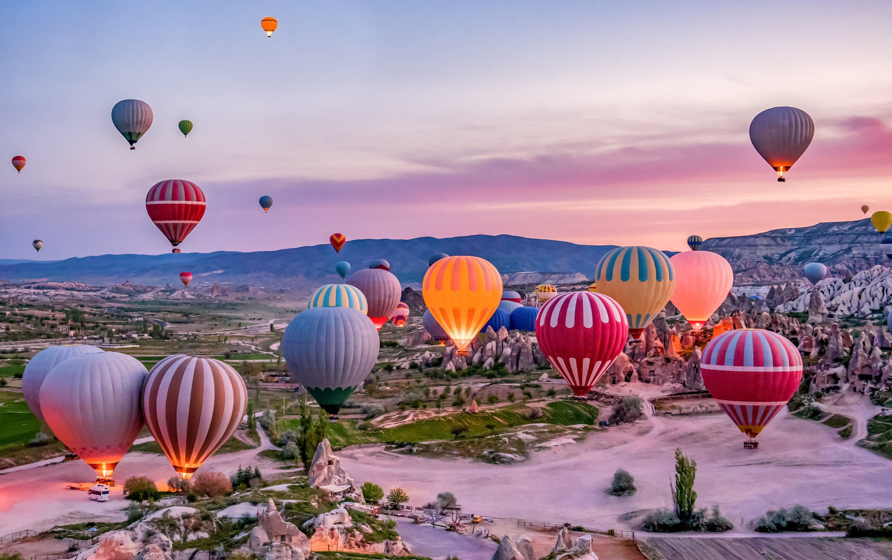
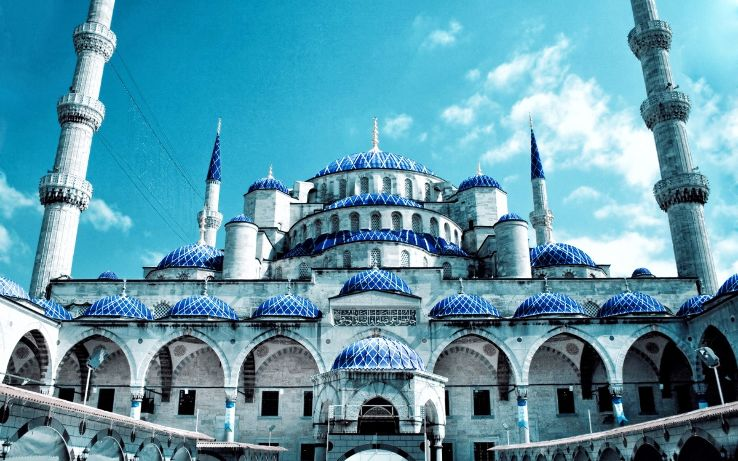
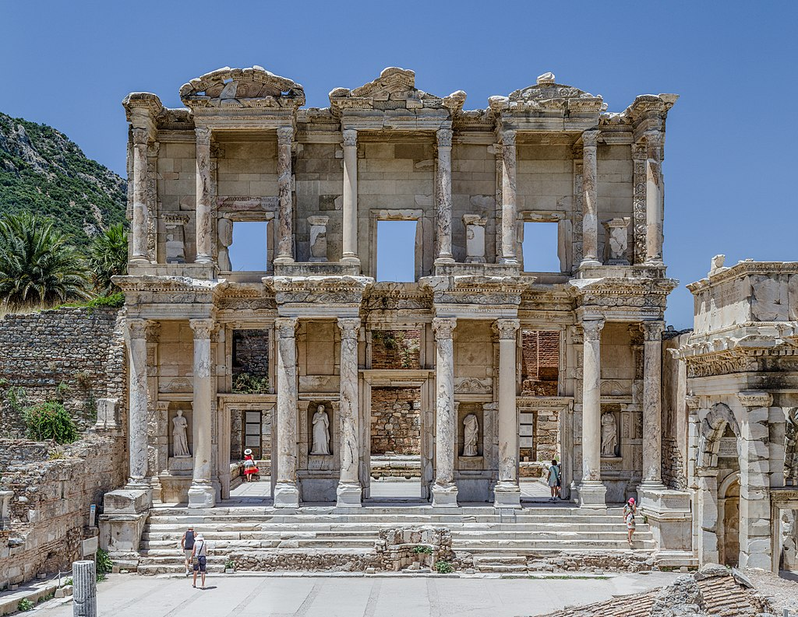
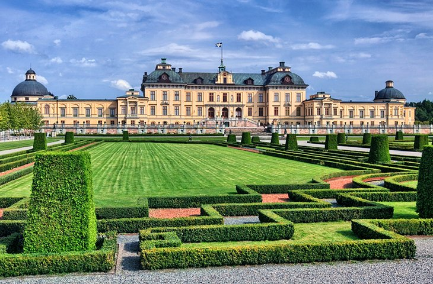

Let's Explore The World
List of Countries Now Available
- Italy
- Turkey
- Sweden
Write down your recently visited places
=My most recently visited place is Cox's Bazar & Khargrachori
Cox's Bazar
I went there last year with my family. We went to Himchori, Fish Aquarium, Inani Beach. We saw mesmerising sunset there . It was a beautiful day indeed
Khagrachori
I went there this year. We went to Sajek and many more tourist places
Take a short look on the packages
- Italy
- Turkey
- Sweden
- Others
Write down about the place you want to visit?
= I want to visit California. California is one the state in western United States. It is rich in pleasent weather, adventure and opportunities.
I want to visit Napa Valley, Golden Gate bridge,Pfeiffer beach, Hearst Castle, La Jolla Shoed and La Jolla Coves.
Italy
Amalfi

Amalfi is a town and comune in the province of Salerno, in the region of Campania, Italy, on the Gulf of Salerno.
It lies at the mouth of a deep ravine, at the foot of Monte Cerreto (1,315 metres, 4,314 feet), surrounded by dramatic cliffs and coastal scenery.
Rome

Rome is the capital city of Italy. It is also the capital of the Lazio region, the centre of the Metropolitan City of Rome, and a special comune named Comune di Roma Capitale. With 2,860,009 residents in 1,285 km2 (496.1 sq mi), Rome is the country's most populated comune and the third most populous city in the European Union by population within city limits.
The Metropolitan City of Rome, with a population of 4,355,725 residents, is the most populous metropolitan city in Italy.
Napels

Naples is the regional capital of Campania and the third-largest city of Italy, after Rome and Milan, with a population of 909,048 within the city's administrative limits as of 2022.
Its province-level municipality is the third-most populous metropolitan city in Italy with a population of 3,115,320 residents, and its metropolitan area stretches beyond the boundaries of the city wall for approximately 20 miles.
Write down your ID here
=WB2302090
Turkey
Cappadocia

Cappadocia is a historical region in Central Anatolia, Turkey.
It is largely in the provinces of Nevşehir, Kayseri, Aksaray, Kırşehir, Sivas and Niğde.
Blue Mosque Istanbul

The Blue Mosque in Istanbul, also known by its official name, the Sultan Ahmed Mosque , is an Ottoman-era historical imperial mosque located in Istanbul, Turkey.
A functioning mosque, it also attracts large numbers of tourist visitors. It was constructed between 1609 and 1616 during the rule of Ahmed I.
Its Külliye contains Ahmed's tomb, a madrasah and a hospice. Hand-painted blue tiles adorn the mosque’s interior walls, and at night the mosque is bathed in blue as lights frame the mosque’s five main domes, six minarets and eight secondary domes.
It sits next to the Hagia Sophia, the principal mosque of Istanbul until the Blue Mosque's construction and another popular tourist site. The Blue Mosque was included in the UNESCO World Heritage Site list in 1985 under the name of "Historic Areas of Istanbul".
Ephesus

Ephesus was a city in Ancient Greece[3][4] on the coast of Ionia, 3 kilometres (1.9 mi) southwest of present-day Selçuk in İzmir Province, Turkey. It was built in the 10th century BC on the site of Apasa, the former Arzawan capital by Attic and Ionian Greek colonists.
During the Classical Greek era, it was one of twelve cities that were members of the Ionian League. The city came under the control of the Roman Republic in 129 BC.
Write down your project name
= My project name is Travel X Company
Sweden
Skansen

Skansen is the oldest open-air museum and zoo in Sweden located on the island Djurgården in Stockholm, Sweden. It was opened on 11 October 1891 by Artur Hazelius (1833–1901) to show the way of life in the different parts of Sweden before the industrial era.
Stockholm

Stockholm is the capital and largest city of Sweden as well as the largest urban area in Scandinavia. Approximately 980,000 people live in the municipality,[9] with 2.1 million in the urban area, and 2.4 million in the metropolitan area
Vasa Museum

The Vasa Museum (Swedish: Vasamuseet) is a maritime museum in Stockholm, Sweden.
Located on the island of Djurgården, the museum displays the only almost fully intact 17th-century ship that has ever been salvaged, the 64-gun warship Vasa that sank on her maiden voyage in 1628. The Vasa Museum opened in 1990 and, according to the official website, is the most visited museum in Scandinavia. Together with other museums such as the Stockholm Maritime Museum, it belongs to the Swedish National Maritime Museums (SNMM).
Write down your name and mentor name here
= My name is Tanzina Tabassum. You can call me by my name Risa.
= Mentor's Name: Anannya Chowdhury.